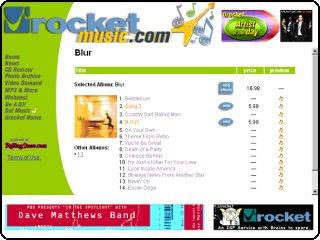
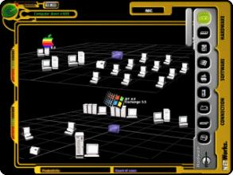
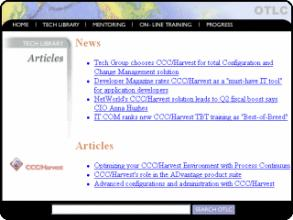
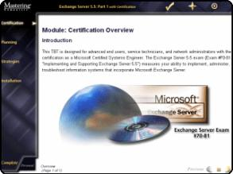
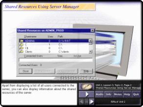
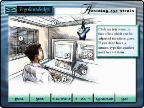
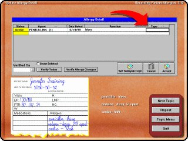

| 1999-2001 | Supertracks, Inc. Portland, Oregon Lead Developer Technical Lead and Architect for e-commerce development, B2B/B2C digital music distribution, and streaming/caching technologies using C++, COM/ATL, Visual Basic, IIS/ASP, XML, SQL Server, and WinSock programming. Microsoft Digital Rights Management, Windows Media, and other digital encoding and encryption technologies were used. |
| 1995-1999 | Computer Associates International PLATINUM technology, inc. Mastering Computers Eagle River Interactive Graphic Media [Company changed ownership 5 times while I was in this job.] Portland, Oregon Engineering Manager Manager of the software engineering and web development team creating technology-based training and web-based educational products using Visual C++, Visual Basic, IIS/ASP, HTML, client and server scripting languages, and database (SQL Server) technologies. Senior Engineer Multimedia programming using Microsoft Visual C++, Visual Basic, Macromedia Authorware and Director. |
| 1994 | Prudential Insurance Houston, Texas Programmer Windows programming using Microsoft Visual Basic. |
| 1992-1994 | Rice University, Fondren Library Houston, Texas Assistant Librarian Circulation services. User assistance for on-line Internet and LAN-based services. Computer-based training development. HTML programming. |
| 1982-1992 | University of Texas, Fine Arts Library Austin, Texas Library Assistant Various positions including management of library staff, user assistance with on-line and printed library resources, periodical and bibliographic processing, circulation, archival and preservation services. |
| 1982 | Orquesta Sinfònica de Monterrey Monterrey, Mexico Cellist |
| 1992 | Universitè de Nice Nice, France Facultè des Lettres |
| 1982-1992 | University of Texas Austin, Texas College of Fine Arts - School of Music Mu Phi Epsilon |
| 1981-83 | Pan American University Edinburg, Texas Department of Liberal Arts |
| 
|
This project was a partnership between Supertracks, Preview Systems, Intel, Urocket (a subsidiary of NEC/Packard Bell), and EMI Music. Supertracks developed a micro-payment system for music called the Internet Music Card (IMC). These cards were bundled with home music studio PCs by NEC/Packard Bell. Music provided by EMI was sold through the Urocket music portal. Web-based delivery was developed using Active Server Pages (ASP), business logic components that access a SQL Server database, and Site Server e-commerce components. The music files were encrypted using Intel's Software Integrity
System and license management was provided by Preview Systems ZipLock electronic music distribution (EMD) system. |
| This prototype for a tile-based real-time educational strategy game was to be used in information technology training. The game simulates computer networking environments and allows users to experiment with installation, configuration, management, troubleshooting, and other networking processes. Additional components of the game also simulate the network operating system's desktop environment. The game architecture consists of a graphics engine programmed in C++ using DirectX, a logic engine that draws scenarios from a database of operating system rules, software properties, and hardware configurations, and a desktop simulator consisting of components built from resource templates that mimic a graphical user interface. This provides an extremely realistic simulation of the operating system environment. |

Copyright © 1999. All rights reserved. |
| 
Copyright © 1999 PLATINUM technology, inc. |
The PLATINUM technology Online Technology Learning Center (OTLC) is an integrated collection of training technologies delivered over the Internet or corporate intranet. It includes technology based training (TBT), on-line testing, distance learning, webcasts, bulletin boards, chat rooms, and reference. The distance learning, bulletin boards, and chat room components of the OTLC are third-party products seamlessly integrated into the web interface. Live and pre-recorded webcasts use Microsoft Netshow. The online testing and reference components are developed using Active Server Pages (ASP) pages and ActiveX Database Objects (ADO) with a SQL Server database. Administrative tracking and management features are integrated into this web site and are programmed using ActiveX, ASP, and database technology. |
| KnowledgeTRACK™ is technology based training designed to run in a web browser using state-of-the-art Internet technology. Content was created by Mastering Computers' information technology experts on MCSE Certification. Additional courses were created for MacMillan New Riders Publishing and later for PLATINUM technology. KnowledgeTRACK is delivered on CD-ROM, LAN, Intranet, and Internet. In-house tools and processes created especially for KnowledgeTRACK are one of the keys to its great success. Highly efficient content creation methods allow courses to be produced in one-third the time of other industry leaders. This product was later licensed to, and still used by, KnowledgeNet. |

Copyright © 1997-98 Mastering, Inc., 1998-99 PLATINUM technology, inc. |
| 
Copyright © 1997 Mastering, Inc. and NETg |
Mastering Computers' goal was to have a large library of CBT products initially available to offer their Instructor Led Training customers, and then to put their own seminar content into the CBT format. To accomplish this, Mastering Computers licensed from NETg the content and source code of their Skill Builder™ CBT product line. Changes were made to the "NETg" engine code (written in C++ with MFC) to meet enhancement specs and to give the private-labeled product a new look and feel. In-house development tools (written in C++) were created to efficiently and expediently place content into the new engine. |
| This off-the-shelf product teaches good ergonomic practices to anyone who sits at a computer all day. It was programmed in Macromedia Authorware. It was to be the first in a line of HR training products using the same interface and administrative components. The product line consists of a student tracking system programmed in Microsoft Visual Basic with an Access database. It has an administrative reporting component programmed with Seagate Crystal Reports. |

Copyright © 1996 Eagle River Interactive |
| 
Copyright © 1995 Kaiser Permanente, Inc. |
This project for client Kaiser Permanente called for a sophisticated yet conservative multimedia CBT for use by their entire medical staff because they were completely automating their patient record keeping processes with a Windows database client product called EpicCare. The CBT was programmed in Macromedia Authorware and relies heavily on video taken at the client's offices and then converted to AVI or stills. The product also uses audio to convey all instructional material. In addition to the multimedia elements, the courses use simulations of the software being taught. These simulations are programmed in Authorware using screen captures from the EpicCare software. |
| Years | Experience |
| 5 | C/C++ |
| 5 | MFC |
| 2 | ATL |
| 8 | Visual Basic |
| 3 | IIS/ASP |
| 3 | SQL Server |
| 3 | ODBC, ADO, OLEDB |
| 2 | COM, COM+, MTS |
| 2 | Site Server |
| 2 | XML |
| 2 | WinSock |
| 1 | Windows CE |
| 3 | DirectX |
| 8 | HTML |
| 5 | JavaScript, VBScript |
| 2 | Digital Rights Management |
| 2 | Windows Media Technologies |
| 6 | Macromedia Authorware, Director, Flash |